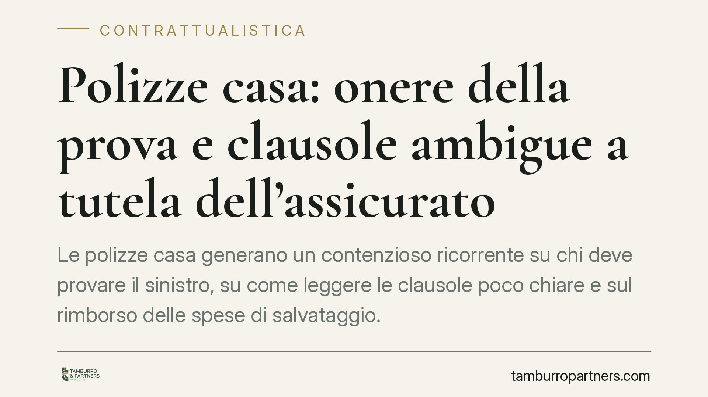

Polizze casa: onere della prova e clausole ambigue a tutela dell'assicurato
Le polizze casa generano un contenzioso ricorrente su chi deve provare il sinistro, su come leggere le clausole poco chiare e sul rimborso delle spese di salvataggio. Il quadro codicistico offre regole precise, spesso favorevoli all'assicurato. Qui ricostruiamo i principi applicabili e gli strumenti di reclamo oggi disponibili, con un focus sulle polizze comuni in condominio.

Il contesto: perché le polizze casa generano conflitto
Le controversie sulle polizze a copertura dell'abitazione (incendio, furto, danni da acqua, responsabilità civile) ruotano quasi sempre attorno a tre questioni: chi deve dimostrare cosa, come si interpretano le clausole scritte dalla compagnia e quali spese sono rimborsabili. Sono profili regolati dal Codice civile e dal Codice delle assicurazioni private (D.Lgs. 209/2005), al quale si affianca l'attività di vigilanza dell'IVASS.
Una precisazione doverosa. Nel settore assicurativo non esiste, a oggi, un organismo decisorio stragiudiziale analogo all'Arbitro Bancario Finanziario (ABF, presso la Banca d'Italia) o all'Arbitro per le Controversie Finanziarie (ACF, presso la Consob). Le tutele stragiudiziali passano dal reclamo alla compagnia, dall'eventuale reclamo all'IVASS e dalla mediazione obbligatoria in materia di contratti assicurativi (art. 5, D.Lgs. 28/2010) prima del giudizio.
Inquadramento normativo
Onere della prova (art. 2697 c.c.). Chi vuole far valere un diritto deve provare i fatti che ne sono il fondamento. Nel sinistro, l'assicurato deve dimostrare l'esistenza del contratto e il verificarsi dell'evento coperto. Spetta invece alla compagnia provare i fatti che escludono o limitano l'indennizzo: per esempio l'operatività di una clausola di esclusione o la ricorrenza di una causa di decadenza. È una ripartizione che riequilibra la posizione del cliente di fronte a contratti predisposti dall'impresa.
Clausole ambigue (art. 1370 c.c.). Nei contratti conclusi tramite moduli o formulari — come sono quasi tutte le polizze — le clausole poco chiare si interpretano a favore dell'aderente e contro chi le ha redatte (regola dell'*interpretatio contra proferentem*). In concreto: se una definizione di «evento atmosferico» o di «furto con scasso» è formulata in modo equivoco, il dubbio non può ricadere sull'assicurato.
Spese di salvataggio (art. 1914 c.c.). L'assicurato ha il dovere di attivarsi per evitare o ridurre il danno. Le spese sostenute a questo scopo sono a carico dell'assicuratore. La norma consente il rimborso anche oltre la somma assicurata, ma entro i limiti e secondo i criteri previsti dalla legge e dalle condizioni di polizza: non si tratta quindi di un rimborso illimitato e automatico, bensì proporzionato e ancorato al contratto. Vanno escluse le spese manifestamente avventate o sproporzionate.
Implicazioni pratiche
Per chi stipula una polizza casa, questi principi incidono sulla concreta possibilità di ottenere l'indennizzo. Spesso il rigetto della compagnia si fonda su clausole di esclusione dal perimetro incerto: in questi casi la combinazione tra art. 2697 e art. 1370 c.c. offre argomenti significativi, perché onera l'impresa della prova dell'esclusione e impone di leggere il dubbio in favore dell'assicurato.
Il profilo condominiale. Molti edifici hanno una polizza «globale fabbricati» stipulata dal condominio. Qui emerge la domanda sulla legittimazione: può il singolo condòmino attivare la copertura per un danno alle parti comuni o alla propria unità? La regola operativa è che la gestione del contratto spetta all'amministratore, in rappresentanza del condominio. Il singolo può agire autonomamente quando il danno riguarda la sua proprietà esclusiva e la polizza lo contempla, ovvero quando l'amministratore resti inerte sui danni alle parti comuni. È quindi essenziale verificare chi è il contraente, chi sono gli assicurati e quali beni rientrano nella copertura.
Cosa fare in concreto
- Conservate la documentazione del sinistro (foto, verbali, fatture di riparazione e spese di contenimento del danno): è la base probatoria richiesta dall'art. 2697 c.c.
- Leggete le definizioni e le esclusioni prima di sottoscrivere: chiedete la riformulazione delle clausole ambigue o un chiarimento scritto.
- In caso di diniego, presentate reclamo scritto alla compagnia e, se la risposta non soddisfa, valutate il reclamo all'IVASS e la mediazione obbligatoria.
- In condominio, verificate con l'amministratore contraente, assicurati e beni coperti dalla polizza comune prima di attivarvi individualmente.
- Valutate un esame tecnico-legale quando l'importo del danno o la complessità della clausola lo giustificano.
I principi codicistici offrono strumenti concreti, ma l'esito dipende dal testo della singola polizza e dalle circostanze del sinistro. Una verifica preventiva delle condizioni contrattuali riduce il rischio di contestazioni.
Ogni contratto ha il suo equilibrio.
Se vuoi una revisione delle clausole o una redazione su misura, scrivi allo studio. Ti rispondiamo entro un giorno lavorativo.